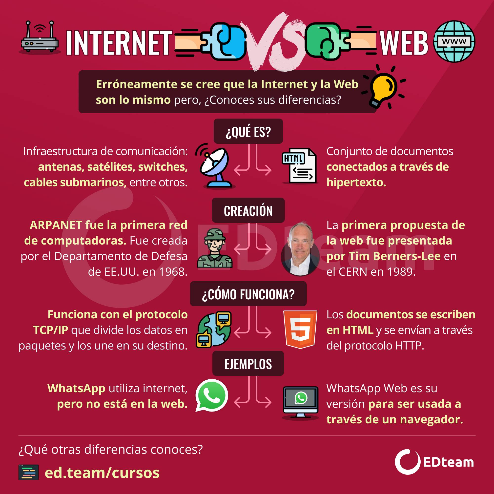
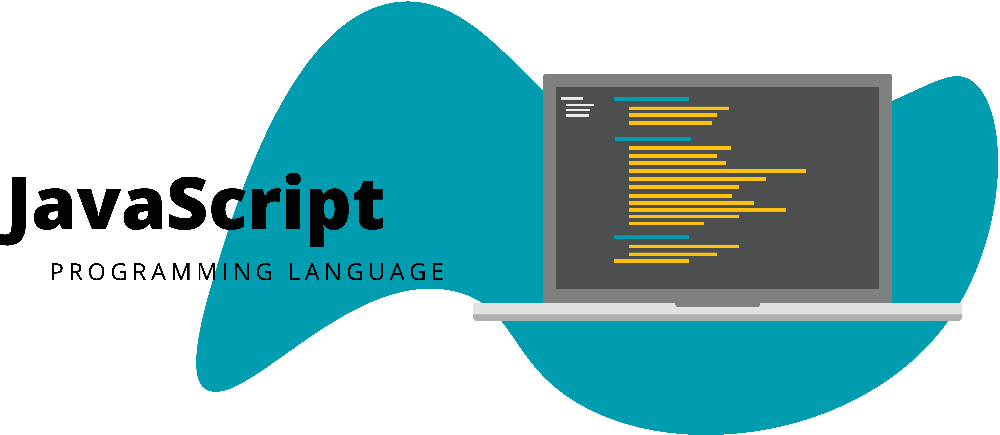
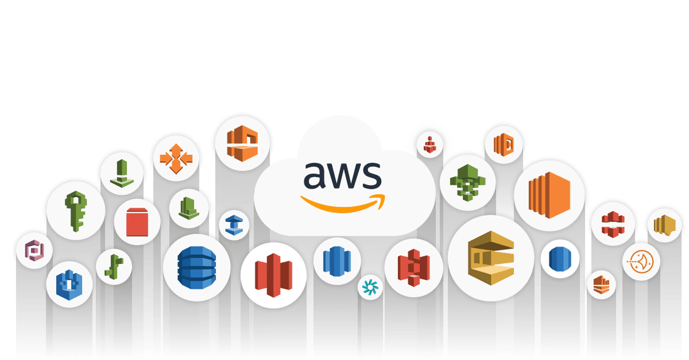

Es importante señalar la distinción entre estas dos palabras que se usan cada vez más de manera indistinta
Vallejos (2017) describe que el Internet “Es una colección de miles de redes de computadora, también conocida como la súper autopista de la información”. (pp. 2) Al ser una red de computadoras conectadas que abarca todo el mundo, ninguna empresa es su dueña; es producto de un esfuerzo cooperativo regido por un sistema de normas y reglas, cuyo propósito principal es compartir información

Por otra parte, Robbins (2018), establece que la Web (World Wide Web, o www) es solo una de las formas en que la información puede compartirse a través de Internet. Es la única en la que permite que los documentos se vinculen entre sí mediante enlaces de hipertexto, formando así una enorme "red" de información conectada. (pp. 21) De esta forma podemos relacionar ambos conceptos, en donde la Web, es un conjunto de documentos interconectados por enlaces de hipertexto, disponibles en Internet que se pueden comunicar a través de la tecnología digital. Entendiéndose por “hipertexto” la mezcla de textos, gráficos y archivos de todo tipo en un mismo documento. (Latorre, 2020)
Web App, o “Aplicación Web”, es una versión mejorada de la página web, es una interpretación optimizada y ajustable a cualquier dispositivo móvil o tableta e independiente de los navegadores y sistemas operativos. No requiere de instalación, debido a que se carga en el servidor web y se ejecuta en el navegador. (InternetPasoaPaso.com, 2019)
El Frontend, “Es la parte visible, la que muestra el diseño, los contenidos y permite a los visitantes navegar por las diferentes páginas.” (NeoAttack, 2019) Esta parte que engloba y muestra todo el trabajo de diseño web y, por lo general, hace uso de tres lenguajes diferentes: HTML, CSS y JavaScript,
HTML es un lenguaje de marcado utilizado para crear contenido en la web. Se basa en el uso de etiquetas y atributos para definir la estructura y semántica del contenido. Permite a los desarrolladores web crear diferentes tipos de contenido, como texto, imágenes, enlaces y multimedia, y organizarlos en una página web. HTML se utiliza en conjunto con otros lenguajes y tecnologías para crear sitios web interactivos y dinámicos.

CSS (Cascading Style Sheets) es un lenguaje utilizado para dar estilo y formato a una página web. Se utiliza para definir la presentación visual de los elementos HTML, incluyendo el color, la fuente y la posición. CSS permite separar el contenido de la presentación visual, lo que facilita la personalización y mantenimiento de una página web. En resumen, CSS es esencial para la creación de una experiencia visual atractiva y coherente en una página web.

JavaScript es un lenguaje de programación utilizado para crear interactividad y dinamismo en una página web. Se utiliza para programar la funcionalidad del lado del cliente, lo que permite a los usuarios interactuar con una página sin tener que recargarla. JavaScript se puede utilizar para validar formularios, crear animaciones y efectos visuales, y para conectar con APIs de terceros.

El front-end, también conocido como frontend, se refiere a la parte de una aplicación web o sitio web que es visible para el usuario y con la que interactúa. Esto incluye la estructura, diseño y funcionalidad que se ejecuta en el navegador del usuario. Los lenguajes de programación comúnmente utilizados para desarrollar el front-end son HTML, CSS y JavaScript. Existen varios lenguajes de Programacion como: -PHP (Laravel, CodeIgniter, Symfony, CakePHP) -Python (Django, TurboGears) -Ruby (Ruby on Rails, Sinatra) -JavaScript (Angular, Node.js, Rhino, SpiderMonkey) -Java (Spring MVC, Java Server Faces, Spring Boot, Grails, Struts) -ASP.Net (DotNetNuke, ASP.Net MVC)

El hosting es un servicio que permite a los usuarios almacenar y publicar su sitio web en Internet. Los proveedores de hosting ofrecen espacio en servidores para alojar los archivos del sitio web y permitir su acceso desde cualquier parte del mundo. El hosting puede incluir otros servicios como correo electrónico y seguridad en línea.

Hay muchas formas en que la información se puede pasar entre las computadoras, incluido el correo electrónico, la transferencia de archivos (FTP) y muchos modos más especializados sobre los que se construye Internet. Estos métodos estandarizados para transferir datos o documentos a través de una red se conocen como protocolos.
HTTP (Hypertext Transfer Protocol) es un protocolo de comunicación utilizado para transferir datos en la web. Se utiliza para solicitar y transmitir información entre clientes y servidores web. HTTP funciona en la capa de aplicación del modelo OSI y es un protocolo sin estado, lo que significa que no almacena información sobre conexiones anteriores.
HTTPS (Hypertext Transfer Protocol Secure) es una versión segura de HTTP que utiliza cifrado para proteger la privacidad y seguridad de la información transmitida. Utiliza el protocolo SSL/TLS para cifrar los datos y prevenir su interceptación o modificación por terceros. HTTPS se utiliza para proteger transacciones en línea, como compras y transferencias de datos sensibles.
El modelo cliente-servidor es un enfoque de diseño de sistemas en el que los recursos y servicios se dividen en dos categorías: clientes y servidores. Los clientes son dispositivos o aplicaciones que solicitan servicios, mientras que los servidores son dispositivos o aplicaciones que proporcionan servicios a los clientes. El modelo se basa en una arquitectura de red en la que los clientes realizan solicitudes a los servidores a través de una red y reciben respuestas en consecuencia.

Los servidores web son computadoras que ejecutan software especializado para manejar las solicitudes del Protocolo de transferencia de hipertexto. Los dos software más populares son Apache y Microsoft Internet Information Services (IIS). Cada dispositivo en Internet tiene una dirección IP única, pero el Sistema de nombres de dominio (DNS) se utiliza para referirse a los servidores por su nombre de dominio. Es posible configurar un servidor para asignar varios nombres de dominio a una sola dirección IP, lo que permite que varios sitios compartan un servidor.
Los clientes son software que solicitan información a los servidores web. Las solicitudes y respuestas se realizan a través del protocolo HTTP. Los usuarios acceden a la Web a través de navegadores de escritorio o móviles, y también hay tecnologías de asistencia. Los sitios web deben ser accesibles y utilizables para todos los usuarios, independientemente de sus experiencias de navegación.
Los microservicios son una arquitectura de desarrollo de software que utiliza pequeños servicios independientes y autónomos. Estos servicios se comunican entre sí mediante peticiones y pueden estar en diferentes lenguajes de programación. La arquitectura de microservicios permite una mayor flexibilidad y escalabilidad en la infraestructura IT. Para implementarla en soluciones IT ya desarrolladas, se debe utilizar una arquitectura en dos capas.

Cloud Computing es un modelo de prestación de servicios de tecnología de la información que se basa en Internet y que permite el acceso bajo demanda a un conjunto compartido de recursos informáticos configurables, como servidores, almacenamiento, aplicaciones y servicios de red. Este modelo se caracteriza por la escalabilidad, la flexibilidad, la eficiencia y la reducción de costos que ofrece a las empresas. Los usuarios pueden acceder a los recursos de manera remota y pagar solo por lo que utilizan, sin necesidad de invertir en infraestructura propia. Además, los proveedores de servicios de nube son responsables de la gestión y mantenimiento de los recursos, lo que libera a las empresas de estas tareas.
SaaS (Software as a Service) es un modelo de distribución de software en el que los usuarios acceden a aplicaciones a través de internet en lugar de descargarlas e instalarlas en sus propios dispositivos. El software se ejecuta en servidores remotos gestionados por proveedores de servicios en la nube, y los usuarios pueden acceder a él a través de un navegador web o una aplicación específica. Los usuarios pagan una tarifa periódica por el acceso al software y los servicios asociados, y el proveedor se encarga de la gestión y mantenimiento del software y la infraestructura subyacente.
PaaS significa Plataforma como Servicio (Platform as a Service en inglés) y es un modelo de computación en la nube que ofrece a los usuarios una plataforma de desarrollo y herramientas para crear, probar y ejecutar aplicaciones en la nube. Los proveedores de PaaS ofrecen una infraestructura completa que incluye hardware, sistemas operativos, software de desarrollo, servidores web y bases de datos, lo que permite a los desarrolladores centrarse en la creación de aplicaciones sin preocuparse por la infraestructura subyacente. Además, los usuarios solo pagan por los recursos que usan y no tienen que preocuparse por el mantenimiento de la infraestructura.
PaaS, IaaS y SaaS son modelos de servicios en la nube. En IaaS, el proveedor gestiona la infraestructura, mientras que el usuario se encarga del sistema operativo, las aplicaciones y el middleware. En SaaS, el proveedor gestiona una aplicación completa, mientras que el usuario solo se conecta a través de un explorador web o una API. En PaaS, el proveedor gestiona la infraestructura y el software, permitiendo a los desarrolladores centrarse en el código.
Amazon Web Services (AWS) es una plataforma de servicios en la nube ofrecida por Amazon. AWS ofrece una amplia variedad de servicios de computación, almacenamiento, bases de datos, redes, análisis, aprendizaje automático, seguridad, IoT, realidad virtual, entre otros. Estos servicios permiten a las empresas y organizaciones crear y ejecutar aplicaciones y servicios en la nube con alta escalabilidad, disponibilidad y rendimiento, sin la necesidad de invertir en infraestructura y hardware costosos. AWS es una de las plataformas líderes en la nube y es utilizada por millones de clientes en todo el mundo.

Amazon API Gateway es un servicio de AWS que permite crear, publicar, mantener, monitorear y asegurar APIs en cualquier escala. Permite conectar aplicaciones y servicios en la nube, en instalaciones físicas o en sistemas de terceros. Es altamente escalable, seguro y puede integrarse con otros servicios de AWS. También admite la creación de API RESTful y WebSocket.
AWS Lambda es un servicio de computación sin servidor ofrecido por Amazon Web Services que permite ejecutar código en la nube sin tener que preocuparse por administrar los servidores subyacentes. Con AWS Lambda, los usuarios pueden ejecutar su código en respuesta a eventos, como cargas de archivos o solicitudes de API Gateway, y solo pagan por el tiempo de ejecución de su código. Lambda también es altamente escalable y se integra con muchos otros servicios de AWS para crear aplicaciones y flujos de trabajo complejos.
AWS S3 (Simple Storage Service) es un servicio de almacenamiento en la nube que permite a los usuarios almacenar y recuperar grandes cantidades de datos de forma segura y escalable. S3 es altamente disponible y duradero, lo que significa que los datos se replican automáticamente en múltiples ubicaciones y se pueden acceder desde cualquier lugar del mundo a través de una API RESTful. S3 es utilizado por empresas de todos los tamaños para almacenar y distribuir contenido estático, almacenar copias de seguridad y archivos de registro, y como almacenamiento principal para aplicaciones web y móviles.
AWS SQS (Simple Queue Service) es un servicio de mensajería que permite la comunicación entre componentes y sistemas de una arquitectura en la nube. Este servicio maneja colas de mensajes para almacenar y transmitir mensajes de forma segura y confiable entre aplicaciones distribuidas. También proporciona escalabilidad y tolerancia a fallos, y se integra con otros servicios de AWS para crear sistemas altamente disponibles y resilientes.
Amazon Simple Notification Service (SNS) es un servicio de mensajería que permite la entrega de mensajes a una gran cantidad de destinatarios o suscriptores. Los mensajes pueden ser de varios tipos, incluyendo notificaciones push, mensajes de texto, correo electrónico, o mensajes de protocolo de aplicación, y se pueden enviar a través de varios protocolos, como HTTP, HTTPS, correo electrónico, SMS, entre otros. SNS es altamente escalable y se puede integrar con otros servicios de AWS, lo que lo hace una opción popular para la gestión de eventos y la orquestación de sistemas distribuidos en la nube.
AWS CloudFormation es un servicio de infraestructura como código que permite automatizar la creación y gestión de recursos de AWS. Con CloudFormation, se puede describir toda la infraestructura necesaria para ejecutar una aplicación en AWS en un archivo de texto y, a continuación, utilizar ese archivo para aprovisionar y configurar automáticamente los recursos de AWS de forma coherente y repetible. También se puede utilizar para actualizar y eliminar recursos de manera segura y eficiente.
AWS IAM (Identity and Access Management) es un servicio de AWS que permite gestionar el acceso a los recursos de AWS de forma segura y centralizada. Con IAM, se pueden crear y gestionar usuarios, grupos y roles de manera que se puedan otorgar permisos granulares y controlar el acceso a los recursos de AWS. IAM también proporciona funciones de seguridad adicionales, como la generación de claves de acceso y la integración con AWS CloudTrail para el seguimiento de eventos.
Mapa Mental PDF